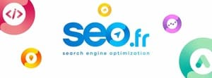

Histoire de l'Entreprise :
Fondée en 2009 par deux passionnés du référencement, Jean Dupont et Marie Dubois, SEO.fr est rapidement devenue l'une des principales agences de référencement en France. Leur vision était de fournir des services de qualité supérieure en matière de SEO, en mettant l'accent sur la transparence, l'innovation et les résultats tangibles pour leurs clients. Au fil des années, l'entreprise a connu une croissance constante, élargissant son équipe et ses compétences pour répondre aux demandes croissantes du marché.
Mission de l'Entreprise :
La mission de SEO.fr est d'aider les entreprises de toutes tailles à maximiser leur visibilité en ligne et à atteindre leurs objectifs commerciaux grâce à des stratégies de référencement naturel et de marketing digital efficaces. En combinant une expertise technique approfondie, une analyse de données avancée et une approche personnalisée, SEO.fr s'efforce d'offrir à ses clients un avantage concurrentiel sur le marché numérique en constante évolution.
Valeurs de l'Entreprise :
Structure Organisationnelle :
SEO.fr est dirigée par une équipe de direction expérimentée, composée de professionnels chevronnés du marketing digital, du développement web, de l'analyse de données et de la gestion de projet. L'entreprise est organisée en différents départements spécialisés, notamment le SEO technique, le contenu éditorial, le référencement local, le marketing de contenu, les médias sociaux et le service clientèle. Chaque département est dirigé par un responsable dédié, chargé de superviser les opérations quotidiennes et de garantir l'excellence dans la prestation des services.
Culture d'Entreprise :
Chez SEO.fr, l'innovation, la créativité et la passion pour le référencement sont au cœur de la culture d'entreprise. L'entreprise encourage un environnement de travail collaboratif et stimulant, où les employés sont encouragés à partager leurs idées, à relever des défis et à poursuivre l'excellence professionnelle. SEO.fr valorise également l'apprentissage continu et investit dans le développement professionnel de ses employés à travers la formation, les certifications et les opportunités de croissance professionnelle.